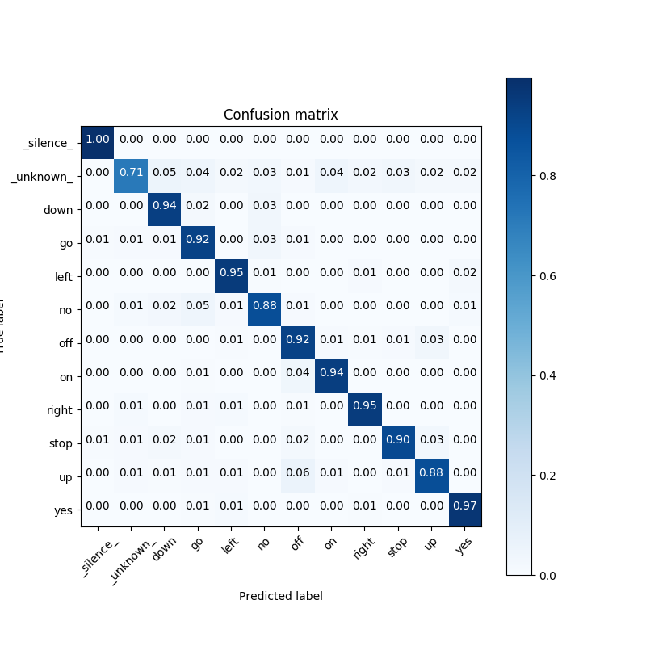

<!DOCTYPE html>
<!--[if IE 8]><html class="no-js lt-ie9" lang="en" > <![endif]-->
<!--[if gt IE 8]><!--> <html class="no-js" lang="en" > <!--<![endif]-->
<head>
  <meta charset="utf-8">
  
  <meta name="viewport" content="width=device-width, initial-scale=1.0">
  
  <title>Inference on KWS with MobileNet &mdash; Akida Examples  documentation</title>
  

  
  
    <link rel="shortcut icon" href="../../_static/favicon.ico"/>
  
  
  

  
  <script type="text/javascript" src="../../_static/js/modernizr.min.js"></script>
  
    
      <script type="text/javascript" id="documentation_options" data-url_root="../../" src="../../_static/documentation_options.js"></script>
        <script type="text/javascript" src="../../_static/jquery.js"></script>
        <script type="text/javascript" src="../../_static/underscore.js"></script>
        <script type="text/javascript" src="../../_static/doctools.js"></script>
        <script type="text/javascript" src="../../_static/language_data.js"></script>
    
    <script type="text/javascript" src="../../_static/js/theme.js"></script>

    

  
  <link rel="stylesheet" href="../../_static/css/theme.css" type="text/css" />
  <link rel="stylesheet" href="../../_static/pygments.css" type="text/css" />
  <link rel="stylesheet" href="../../_static/gallery.css" type="text/css" />
    <link rel="index" title="Index" href="../../genindex.html" />
    <link rel="search" title="Search" href="../../search.html" />
    <link rel="next" title="Inference on CIFAR10 with VGG and MobileNet" href="plot_cifar10_cnn2akida_demo.html" />
    <link rel="prev" title="Inference on MNIST" href="plot_mnist_cnn2akida_main.html" /> 
</head>

<body class="wy-body-for-nav">

   
  <div class="wy-grid-for-nav">
    
    <nav data-toggle="wy-nav-shift" class="wy-nav-side">
      <div class="wy-side-scroll">
        <div class="wy-side-nav-search"  style="background: #3f51b5" >
          

          
            <a href="../../index.html">
          

          
            
            
          
          </a>

          
            
            
              <div class="version">
                1.7.4
              </div>
            
          

          
<div role="search">
  <form id="rtd-search-form" class="wy-form" action="../../search.html" method="get">
    <input type="text" name="q" placeholder="Search docs" />
    <input type="hidden" name="check_keywords" value="yes" />
    <input type="hidden" name="area" value="default" />
  </form>
</div>

          
        </div>

        <div class="wy-menu wy-menu-vertical" data-spy="affix" role="navigation" aria-label="main navigation">
          
            
            
              
            
            
              <ul class="current">
<li class="toctree-l1"><a class="reference internal" href="../../index.html">Overview</a></li>
<li class="toctree-l1"><a class="reference internal" href="../../installation.html">Installation</a><ul>
<li class="toctree-l2"><a class="reference internal" href="../../installation.html#requirements">Requirements</a></li>
<li class="toctree-l2"><a class="reference internal" href="../../installation.html#quick-installation">Quick installation</a></li>
<li class="toctree-l2"><a class="reference internal" href="../../installation.html#running-examples">Running examples</a></li>
</ul>
</li>
<li class="toctree-l1"><a class="reference internal" href="../../user_guide/user_guide.html">User guide</a><ul>
<li class="toctree-l2"><a class="reference internal" href="../../user_guide/getting_started.html">Getting started</a><ul>
<li class="toctree-l3"><a class="reference internal" href="../../user_guide/getting_started.html#for-beginners">For beginners</a></li>
<li class="toctree-l3"><a class="reference internal" href="../../user_guide/getting_started.html#for-users-familiar-with-deep-learning">For users familiar with deep-learning</a></li>
</ul>
</li>
<li class="toctree-l2"><a class="reference internal" href="../../user_guide/aee.html">Akida user guide</a><ul>
<li class="toctree-l3"><a class="reference internal" href="../../user_guide/aee.html#the-akida-execution-engine">The Akida Execution Engine</a><ul>
<li class="toctree-l4"><a class="reference internal" href="../../user_guide/aee.html#id1">1. The Spiking Neural Network model</a></li>
<li class="toctree-l4"><a class="reference internal" href="../../user_guide/aee.html#id2">2. Input data format</a></li>
<li class="toctree-l4"><a class="reference internal" href="../../user_guide/aee.html#id3">3. Determine training mode</a></li>
<li class="toctree-l4"><a class="reference internal" href="../../user_guide/aee.html#id4">4. Interpreting outputs</a></li>
</ul>
</li>
<li class="toctree-l3"><a class="reference internal" href="../../user_guide/aee.html#neural-network-model">Neural Network model</a><ul>
<li class="toctree-l4"><a class="reference internal" href="../../user_guide/aee.html#specifying-the-neural-network-model">Specifying the Neural Network model</a></li>
<li class="toctree-l4"><a class="reference internal" href="../../user_guide/aee.html#saving-and-loading">Saving and loading</a></li>
<li class="toctree-l4"><a class="reference internal" href="../../user_guide/aee.html#input-layer-types">Input layer types</a></li>
<li class="toctree-l4"><a class="reference internal" href="../../user_guide/aee.html#data-processing-layer-types">Data-Processing layer types</a></li>
</ul>
</li>
<li class="toctree-l3"><a class="reference internal" href="../../user_guide/aee.html#id5">Using Akida Unsupervised Learning</a><ul>
<li class="toctree-l4"><a class="reference internal" href="../../user_guide/aee.html#learning-constraints">Learning constraints</a></li>
<li class="toctree-l4"><a class="reference internal" href="../../user_guide/aee.html#compiling-a-layer">Compiling a layer</a></li>
<li class="toctree-l4"><a class="reference internal" href="../../user_guide/aee.html#id7">Learning parameters</a></li>
</ul>
</li>
</ul>
</li>
<li class="toctree-l2"><a class="reference internal" href="../../user_guide/cnn2snn.html">CNN2SNN toolkit</a><ul>
<li class="toctree-l3"><a class="reference internal" href="../../user_guide/cnn2snn.html#overview">Overview</a><ul>
<li class="toctree-l4"><a class="reference internal" href="../../user_guide/cnn2snn.html#conversion-workflow">Conversion Workflow</a></li>
<li class="toctree-l4"><a class="reference internal" href="../../user_guide/cnn2snn.html#compatibility-constraints">Compatibility Constraints</a></li>
<li class="toctree-l4"><a class="reference internal" href="../../user_guide/cnn2snn.html#typical-training-scenario">Typical training scenario</a></li>
</ul>
</li>
<li class="toctree-l3"><a class="reference internal" href="../../user_guide/cnn2snn.html#layers-considerations">Layers Considerations</a><ul>
<li class="toctree-l4"><a class="reference internal" href="../../user_guide/cnn2snn.html#supported-layer-types">Supported layer types</a></li>
<li class="toctree-l4"><a class="reference internal" href="../../user_guide/cnn2snn.html#quantization-aware-layers">Quantization-aware layers</a></li>
<li class="toctree-l4"><a class="reference internal" href="../../user_guide/cnn2snn.html#training-only-layers">Training-Only Layers</a></li>
<li class="toctree-l4"><a class="reference internal" href="../../user_guide/cnn2snn.html#first-layers">First Layers</a></li>
<li class="toctree-l4"><a class="reference internal" href="../../user_guide/cnn2snn.html#id6">Final Layers</a></li>
</ul>
</li>
<li class="toctree-l3"><a class="reference internal" href="../../user_guide/cnn2snn.html#layer-blocks">Layer Blocks</a><ul>
<li class="toctree-l4"><a class="reference internal" href="../../user_guide/cnn2snn.html#id7">Overview</a></li>
<li class="toctree-l4"><a class="reference internal" href="../../user_guide/cnn2snn.html#conv-block"><code class="docutils literal notranslate"><span class="pre">conv_block</span></code></a></li>
<li class="toctree-l4"><a class="reference internal" href="../../user_guide/cnn2snn.html#dense-block"><code class="docutils literal notranslate"><span class="pre">dense_block</span></code></a></li>
<li class="toctree-l4"><a class="reference internal" href="../../user_guide/cnn2snn.html#separable-conv-block"><code class="docutils literal notranslate"><span class="pre">separable_conv_block</span></code></a></li>
</ul>
</li>
<li class="toctree-l3"><a class="reference internal" href="../../user_guide/cnn2snn.html#tips-and-tricks">Tips and Tricks</a></li>
</ul>
</li>
<li class="toctree-l2"><a class="reference internal" href="../../user_guide/hw_constraints.html">Hardware constraints</a><ul>
<li class="toctree-l3"><a class="reference internal" href="../../user_guide/hw_constraints.html#input-layer">Input layer</a></li>
<li class="toctree-l3"><a class="reference internal" href="../../user_guide/hw_constraints.html#data-processing-layers">Data-Processing layers</a><ul>
<li class="toctree-l4"><a class="reference internal" href="../../user_guide/hw_constraints.html#convolutional-layer">Convolutional layer</a></li>
<li class="toctree-l4"><a class="reference internal" href="../../user_guide/hw_constraints.html#fully-connected-layer">Fully connected layer</a></li>
</ul>
</li>
</ul>
</li>
</ul>
</li>
<li class="toctree-l1"><a class="reference internal" href="../../api_reference/api_reference.html">API reference</a><ul>
<li class="toctree-l2"><a class="reference internal" href="../../api_reference/aee_apis.html">Akida Execution Engine</a><ul>
<li class="toctree-l3"><a class="reference internal" href="../../api_reference/aee_apis.html#model">Model</a></li>
<li class="toctree-l3"><a class="reference internal" href="../../api_reference/aee_apis.html#layer">Layer</a></li>
<li class="toctree-l3"><a class="reference internal" href="../../api_reference/aee_apis.html#layerstatistics">LayerStatistics</a></li>
<li class="toctree-l3"><a class="reference internal" href="../../api_reference/aee_apis.html#observer">Observer</a></li>
<li class="toctree-l3"><a class="reference internal" href="../../api_reference/aee_apis.html#inputdata">InputData</a></li>
<li class="toctree-l3"><a class="reference internal" href="../../api_reference/aee_apis.html#inputconvolutional">InputConvolutional</a></li>
<li class="toctree-l3"><a class="reference internal" href="../../api_reference/aee_apis.html#inputbcspike">InputBCSpike</a></li>
<li class="toctree-l3"><a class="reference internal" href="../../api_reference/aee_apis.html#fullyconnected">FullyConnected</a></li>
<li class="toctree-l3"><a class="reference internal" href="../../api_reference/aee_apis.html#convolutional">Convolutional</a></li>
<li class="toctree-l3"><a class="reference internal" href="../../api_reference/aee_apis.html#separableconvolutional">SeparableConvolutional</a></li>
<li class="toctree-l3"><a class="reference internal" href="../../api_reference/aee_apis.html#tensor">Tensor</a></li>
<li class="toctree-l3"><a class="reference internal" href="../../api_reference/aee_apis.html#sparse">Sparse</a></li>
<li class="toctree-l3"><a class="reference internal" href="../../api_reference/aee_apis.html#coords-to-sparse">coords_to_sparse</a></li>
<li class="toctree-l3"><a class="reference internal" href="../../api_reference/aee_apis.html#dense-to-sparse">dense_to_sparse</a></li>
<li class="toctree-l3"><a class="reference internal" href="../../api_reference/aee_apis.html#backendtype">BackendType</a></li>
<li class="toctree-l3"><a class="reference internal" href="../../api_reference/aee_apis.html#convolutionmode">ConvolutionMode</a></li>
<li class="toctree-l3"><a class="reference internal" href="../../api_reference/aee_apis.html#poolingtype">PoolingType</a></li>
<li class="toctree-l3"><a class="reference internal" href="../../api_reference/aee_apis.html#learningtype">LearningType</a></li>
</ul>
</li>
<li class="toctree-l2"><a class="reference internal" href="../../api_reference/cnn2snn_apis.html">CNN2SNN</a><ul>
<li class="toctree-l3"><a class="reference internal" href="../../api_reference/cnn2snn_apis.html#convert">convert</a></li>
<li class="toctree-l3"><a class="reference internal" href="../../api_reference/cnn2snn_apis.html#check-model-compatibility">check_model_compatibility</a></li>
<li class="toctree-l3"><a class="reference internal" href="../../api_reference/cnn2snn_apis.html#weightquantizer">WeightQuantizer</a></li>
<li class="toctree-l3"><a class="reference internal" href="../../api_reference/cnn2snn_apis.html#weightfloat">WeightFloat</a></li>
<li class="toctree-l3"><a class="reference internal" href="../../api_reference/cnn2snn_apis.html#quantizedconv2d">QuantizedConv2D</a></li>
<li class="toctree-l3"><a class="reference internal" href="../../api_reference/cnn2snn_apis.html#quantizeddepthwiseconv2d">QuantizedDepthwiseConv2D</a></li>
<li class="toctree-l3"><a class="reference internal" href="../../api_reference/cnn2snn_apis.html#quantizeddense">QuantizedDense</a></li>
<li class="toctree-l3"><a class="reference internal" href="../../api_reference/cnn2snn_apis.html#quantizedseparableconv2d">QuantizedSeparableConv2D</a></li>
<li class="toctree-l3"><a class="reference internal" href="../../api_reference/cnn2snn_apis.html#activationdiscreterelu">ActivationDiscreteRelu</a></li>
</ul>
</li>
</ul>
</li>
<li class="toctree-l1 current"><a class="reference internal" href="../index.html">Examples</a><ul class="current">
<li class="toctree-l2 current"><a class="reference internal" href="../index.html#cnn2snn">CNN2SNN</a><ul class="current">
<li class="toctree-l3"><a class="reference internal" href="plot_mnist_cnn2akida_main.html">Inference on MNIST</a><ul>
<li class="toctree-l4"><a class="reference internal" href="plot_mnist_cnn2akida_main.html#loading-the-mnist-dataset">1. Loading the MNIST dataset</a></li>
<li class="toctree-l4"><a class="reference internal" href="plot_mnist_cnn2akida_main.html#look-at-some-images-from-the-test-dataset">2. Look at some images from the test dataset</a></li>
<li class="toctree-l4"><a class="reference internal" href="plot_mnist_cnn2akida_main.html#load-the-pre-trained-akida-model">3. Load the pre-trained Akida model</a></li>
<li class="toctree-l4"><a class="reference internal" href="plot_mnist_cnn2akida_main.html#classify-a-single-image">4. Classify a single image</a></li>
<li class="toctree-l4"><a class="reference internal" href="plot_mnist_cnn2akida_main.html#check-performance-across-a-number-of-samples">5. Check performance across a number of samples</a></li>
</ul>
</li>
<li class="toctree-l3 current"><a class="current reference internal" href="#">Inference on KWS with MobileNet</a><ul>
<li class="toctree-l4"><a class="reference internal" href="#load-cnn2snn-tool-dependencies">1. Load CNN2SNN tool dependencies</a></li>
<li class="toctree-l4"><a class="reference internal" href="#load-the-preprocessed-dataset">2. Load the preprocessed dataset</a></li>
<li class="toctree-l4"><a class="reference internal" href="#create-a-keras-model-satisfying-akida-nsoc-requirements">3. Create a Keras model satisfying Akida NSoC requirements</a></li>
<li class="toctree-l4"><a class="reference internal" href="#check-performance">4. Check performance</a></li>
<li class="toctree-l4"><a class="reference internal" href="#conversion-to-akida">5. Conversion to Akida</a></li>
</ul>
</li>
<li class="toctree-l3"><a class="reference internal" href="plot_cifar10_cnn2akida_demo.html">Inference on CIFAR10 with VGG and MobileNet</a><ul>
<li class="toctree-l4"><a class="reference internal" href="plot_cifar10_cnn2akida_demo.html#load-cnn2snn-tool-dependencies">1. Load CNN2SNN tool dependencies</a></li>
<li class="toctree-l4"><a class="reference internal" href="plot_cifar10_cnn2akida_demo.html#load-and-reshape-cifar10-dataset">2. Load and reshape CIFAR10 dataset</a></li>
<li class="toctree-l4"><a class="reference internal" href="plot_cifar10_cnn2akida_demo.html#create-a-quantized-keras-vgg-model">3. Create a quantized Keras VGG model</a></li>
<li class="toctree-l4"><a class="reference internal" href="plot_cifar10_cnn2akida_demo.html#conversion-to-akida">4. Conversion to Akida</a></li>
<li class="toctree-l4"><a class="reference internal" href="plot_cifar10_cnn2akida_demo.html#create-a-quantized-keras-mobilenet-model">5. Create a quantized Keras MobileNet model</a></li>
<li class="toctree-l4"><a class="reference internal" href="plot_cifar10_cnn2akida_demo.html#id2">6. Conversion to Akida</a></li>
</ul>
</li>
<li class="toctree-l3"><a class="reference internal" href="plot_cats_vs_dogs_cnn2akida_demo.html">Transfer learning with MobileNet for cats vs. dogs</a><ul>
<li class="toctree-l4"><a class="reference internal" href="plot_cats_vs_dogs_cnn2akida_demo.html#transfer-learning-process">1. Transfer learning process</a></li>
<li class="toctree-l4"><a class="reference internal" href="plot_cats_vs_dogs_cnn2akida_demo.html#load-and-preprocess-data">2. Load and preprocess data</a></li>
<li class="toctree-l4"><a class="reference internal" href="plot_cats_vs_dogs_cnn2akida_demo.html#convert-a-quantized-keras-model-to-akida">3. Convert a quantized Keras model to Akida</a></li>
<li class="toctree-l4"><a class="reference internal" href="plot_cats_vs_dogs_cnn2akida_demo.html#classify-test-images">4. Classify test images</a></li>
</ul>
</li>
<li class="toctree-l3"><a class="reference internal" href="plot_mobilenet_imagenet.html">Inference on ImageNet with MobileNet</a><ul>
<li class="toctree-l4"><a class="reference internal" href="plot_mobilenet_imagenet.html#load-cnn2snn-tool-dependencies">1. Load CNN2SNN tool dependencies</a></li>
<li class="toctree-l4"><a class="reference internal" href="plot_mobilenet_imagenet.html#load-test-images-from-imagenet">2. Load test images from ImageNet</a></li>
<li class="toctree-l4"><a class="reference internal" href="plot_mobilenet_imagenet.html#create-a-quantized-keras-model">3. Create a quantized Keras model</a></li>
<li class="toctree-l4"><a class="reference internal" href="plot_mobilenet_imagenet.html#convert-keras-model-for-akida-nsoc">4. Convert Keras model for Akida NSoC</a></li>
</ul>
</li>
<li class="toctree-l3"><a class="reference internal" href="plot_mnist_cnn2akida_demo.html">CNN conversion flow tutorial for MNIST</a><ul>
<li class="toctree-l4"><a class="reference internal" href="plot_mnist_cnn2akida_demo.html#system-configuration">1. System configuration</a></li>
<li class="toctree-l4"><a class="reference internal" href="plot_mnist_cnn2akida_demo.html#model-creation-and-performance-check">2. Model creation and performance check</a></li>
<li class="toctree-l4"><a class="reference internal" href="plot_mnist_cnn2akida_demo.html#model-akida-compatibility-check-and-changes">3. Model Akida-compatibility check and changes</a></li>
<li class="toctree-l4"><a class="reference internal" href="plot_mnist_cnn2akida_demo.html#model-quantization-and-training">4. Model quantization and training</a></li>
<li class="toctree-l4"><a class="reference internal" href="plot_mnist_cnn2akida_demo.html#convert-trained-model-for-akida-and-test">5. Convert trained model for Akida and test</a></li>
</ul>
</li>
</ul>
</li>
<li class="toctree-l2"><a class="reference internal" href="../index.html#semisupervised">Semisupervised</a><ul>
<li class="toctree-l3"><a class="reference internal" href="../semisupervised/plot_mnist_main.html">Learning and inference on MNIST</a><ul>
<li class="toctree-l4"><a class="reference internal" href="../semisupervised/plot_mnist_main.html#loading-the-mnist-dataset">1. Loading the MNIST dataset</a></li>
<li class="toctree-l4"><a class="reference internal" href="../semisupervised/plot_mnist_main.html#look-at-some-images-from-the-dataset">2. Look at some images from the dataset</a></li>
<li class="toctree-l4"><a class="reference internal" href="../semisupervised/plot_mnist_main.html#configuring-akida-model">3. Configuring Akida model</a></li>
<li class="toctree-l4"><a class="reference internal" href="../semisupervised/plot_mnist_main.html#testing-performance">4. Testing performance</a></li>
<li class="toctree-l4"><a class="reference internal" href="../semisupervised/plot_mnist_main.html#learning-and-inference">5. Learning and inference</a></li>
</ul>
</li>
<li class="toctree-l3"><a class="reference internal" href="../semisupervised/plot_dvs_main.html">Learning and inference on Characters DVS</a><ul>
<li class="toctree-l4"><a class="reference internal" href="../semisupervised/plot_dvs_main.html#loading-the-characters-dvs-dataset">1. Loading the Characters DVS dataset</a></li>
<li class="toctree-l4"><a class="reference internal" href="../semisupervised/plot_dvs_main.html#look-at-some-events-from-the-dataset">2. Look at some events from the dataset</a></li>
<li class="toctree-l4"><a class="reference internal" href="../semisupervised/plot_dvs_main.html#configuring-akida-model">3. Configuring Akida model</a></li>
<li class="toctree-l4"><a class="reference internal" href="../semisupervised/plot_dvs_main.html#learning-and-inference">4. Learning and inference</a></li>
<li class="toctree-l4"><a class="reference internal" href="../semisupervised/plot_dvs_main.html#unsupervised-learning-with-supervised-classification">5. Unsupervised learning with supervised classification</a></li>
</ul>
</li>
<li class="toctree-l3"><a class="reference internal" href="../semisupervised/plot_nslkdd_main.html">Learning and inference on NSL-KDD</a><ul>
<li class="toctree-l4"><a class="reference internal" href="../semisupervised/plot_nslkdd_main.html#download-and-prepare-the-nsl-kdd-dataset">1. Download and prepare the NSL-KDD dataset</a></li>
<li class="toctree-l4"><a class="reference internal" href="../semisupervised/plot_nslkdd_main.html#sneak-peek-of-the-input-tabular-data">2. Sneak peek of the input tabular data</a></li>
<li class="toctree-l4"><a class="reference internal" href="../semisupervised/plot_nslkdd_main.html#convert-from-tabular-to-binary-data">3. Convert from tabular to binary data</a></li>
<li class="toctree-l4"><a class="reference internal" href="../semisupervised/plot_nslkdd_main.html#oversampling-the-training-data-to-cope-with-imbalanced-dataset">4. Oversampling the training data to cope with imbalanced dataset</a></li>
<li class="toctree-l4"><a class="reference internal" href="../semisupervised/plot_nslkdd_main.html#configuring-akida-model">5. Configuring Akida model</a></li>
<li class="toctree-l4"><a class="reference internal" href="../semisupervised/plot_nslkdd_main.html#learning-and-inference">6. Learning and inference</a></li>
<li class="toctree-l4"><a class="reference internal" href="../semisupervised/plot_nslkdd_main.html#display-results">7. Display results</a></li>
</ul>
</li>
</ul>
</li>
<li class="toctree-l2"><a class="reference internal" href="../index.html#unsupervised">Unsupervised</a><ul>
<li class="toctree-l3"><a class="reference internal" href="../unsupervised/plot_unsupervised_main.html">Native learning for pattern detection</a><ul>
<li class="toctree-l4"><a class="reference internal" href="../unsupervised/plot_unsupervised_main.html#creating-the-dataset">1. Creating the dataset</a></li>
<li class="toctree-l4"><a class="reference internal" href="../unsupervised/plot_unsupervised_main.html#creating-random-dot-images">2. Creating random dot images</a></li>
<li class="toctree-l4"><a class="reference internal" href="../unsupervised/plot_unsupervised_main.html#take-a-look-at-some-of-the-random-dots-images">3. Take a look at some of the random dots images</a></li>
<li class="toctree-l4"><a class="reference internal" href="../unsupervised/plot_unsupervised_main.html#configuring-the-akida-model">4. Configuring the Akida model</a></li>
<li class="toctree-l4"><a class="reference internal" href="../unsupervised/plot_unsupervised_main.html#do-the-learning">5. Do the learning</a></li>
<li class="toctree-l4"><a class="reference internal" href="../unsupervised/plot_unsupervised_main.html#test-the-performance">6. Test the performance</a></li>
</ul>
</li>
</ul>
</li>
</ul>
</li>
<li class="toctree-l1"><a class="reference external" href="https://support.brainchip.com/portal/home">Support</a></li>
<li class="toctree-l1"><a class="reference internal" href="../../license.html">License</a></li>
</ul>

            
          
        </div>
      </div>
    </nav>

    <section data-toggle="wy-nav-shift" class="wy-nav-content-wrap">

      
      <nav class="wy-nav-top" aria-label="top navigation">
        
          <i data-toggle="wy-nav-top" class="fa fa-bars"></i>
          <a href="../../index.html">Akida Examples</a>
        
      </nav>


      <div class="wy-nav-content">
        
        <div class="rst-content">
        
          


<div role="navigation" aria-label="breadcrumbs navigation">

  <ul class="wy-breadcrumbs">
    
      <li><a href="../../index.html">Docs</a> &raquo;</li>
        
          <li><a href="../index.html">Akida examples</a> &raquo;</li>
        
      <li>Inference on KWS with MobileNet</li>
    
    
      <li class="wy-breadcrumbs-aside">
        
            
        
      </li>
    
  </ul>

  
  <hr/>
</div>
          <div role="main" class="document" itemscope="itemscope" itemtype="http://schema.org/Article">
           <div itemprop="articleBody">
            
  <div class="sphx-glr-download-link-note admonition note">
<p class="admonition-title">Note</p>
<p>Click <a class="reference internal" href="#sphx-glr-download-examples-cnn2snn-plot-mobilenet-kws-py"><span class="std std-ref">here</span></a> to download the full example code</p>
</div>
<div class="sphx-glr-example-title section" id="inference-on-kws-with-mobilenet">
<span id="sphx-glr-examples-cnn2snn-plot-mobilenet-kws-py"></span><h1>Inference on KWS with MobileNet<a class="headerlink" href="#inference-on-kws-with-mobilenet" title="Permalink to this headline">¶</a></h1>
<p>This tutorial illustrates how to build a basic speech recognition
Akida network that recognizes ten different words.</p>
<p>The model will be first defined as a CNN and trained in Keras, then
converted using the <a class="reference external" href="../../user_guide/cnn2snn.html">CNN2SNN toolkit</a>.</p>
<p>This example uses a Keyword Spotting Dataset prepared using
<strong>TensorFlow</strong> <a class="reference external" href="https://www.tensorflow.org/tutorials/sequences/audio_recognition">audio recognition
example</a>
utils.</p>
<p>The words to recognize are first converted to <a class="reference external" href="https://github.com/tensorflow/docs/blob/master/site/en/r1/tutorials/sequences/audio_recognition.md#how-does-this-model-work">spectrogram
images</a>
that allows us to use a model architecture that is typically used for
image recognition tasks.</p>
<p>Please refer to <a class="reference external" href="../../examples/cnn2snn/kws_dataset.html">Load and reshape Keyword Spotting dataset (KWS)</a> example for details about the
dataset preparation.</p>
<div class="section" id="load-cnn2snn-tool-dependencies">
<h2>1. Load CNN2SNN tool dependencies<a class="headerlink" href="#load-cnn2snn-tool-dependencies" title="Permalink to this headline">¶</a></h2>
<div class="highlight-default notranslate"><div class="highlight"><pre><span></span><span class="c1"># System imports</span>
<span class="kn">import</span> <span class="nn">os</span>
<span class="kn">import</span> <span class="nn">sys</span>
<span class="kn">import</span> <span class="nn">numpy</span> <span class="k">as</span> <span class="nn">np</span>
<span class="kn">import</span> <span class="nn">pickle</span>
<span class="kn">from</span> <span class="nn">sklearn.metrics</span> <span class="kn">import</span> <span class="n">accuracy_score</span>
<span class="kn">import</span> <span class="nn">itertools</span>
<span class="kn">from</span> <span class="nn">sklearn.metrics</span> <span class="kn">import</span> <span class="n">confusion_matrix</span>
<span class="kn">import</span> <span class="nn">matplotlib.pyplot</span> <span class="k">as</span> <span class="nn">plt</span>

<span class="c1"># TensorFlow imports</span>
<span class="kn">import</span> <span class="nn">tensorflow.keras.backend</span> <span class="k">as</span> <span class="nn">K</span>
<span class="kn">from</span> <span class="nn">tensorflow.keras.utils</span> <span class="kn">import</span> <span class="n">to_categorical</span>
<span class="kn">from</span> <span class="nn">tensorflow.keras.utils</span> <span class="kn">import</span> <span class="n">get_file</span>

<span class="c1"># KWS model imports</span>
<span class="kn">from</span> <span class="nn">akida_models</span> <span class="kn">import</span> <span class="n">mobilenet_kws</span>
</pre></div>
</div>
</div>
<div class="section" id="load-the-preprocessed-dataset">
<h2>2. Load the preprocessed dataset<a class="headerlink" href="#load-the-preprocessed-dataset" title="Permalink to this headline">¶</a></h2>
<div class="highlight-default notranslate"><div class="highlight"><pre><span></span><span class="n">wanted_words</span> <span class="o">=</span> <span class="p">[</span><span class="s1">&#39;down&#39;</span><span class="p">,</span><span class="s1">&#39;go&#39;</span><span class="p">,</span><span class="s1">&#39;left&#39;</span><span class="p">,</span><span class="s1">&#39;no&#39;</span><span class="p">,</span><span class="s1">&#39;off&#39;</span><span class="p">,</span><span class="s1">&#39;on&#39;</span><span class="p">,</span><span class="s1">&#39;right&#39;</span><span class="p">,</span><span class="s1">&#39;stop&#39;</span><span class="p">,</span><span class="s1">&#39;up&#39;</span><span class="p">,</span><span class="s1">&#39;yes&#39;</span><span class="p">]</span>
<span class="n">all_words</span> <span class="o">=</span> <span class="p">[</span><span class="s1">&#39;_silence_&#39;</span><span class="p">,</span><span class="s1">&#39;_unknown_&#39;</span><span class="p">]</span> <span class="o">+</span> <span class="n">wanted_words</span>

<span class="c1"># Preprocessed dataset parameters</span>
<span class="n">CHANNELS</span> <span class="o">=</span> <span class="mi">1</span>
<span class="n">CLASSES</span> <span class="o">=</span> <span class="nb">len</span><span class="p">(</span><span class="n">all_words</span><span class="p">)</span>
<span class="n">SPECTROGRAM_LENGTH</span> <span class="o">=</span> <span class="mi">49</span>
<span class="n">FINGERPRINT_WIDTH</span> <span class="o">=</span> <span class="mi">10</span>

<span class="n">input_shape</span> <span class="o">=</span> <span class="p">(</span><span class="n">SPECTROGRAM_LENGTH</span><span class="p">,</span> <span class="n">FINGERPRINT_WIDTH</span><span class="p">,</span> <span class="n">CHANNELS</span><span class="p">)</span>

<span class="c1"># Try to load pre-processed dataset</span>
<span class="n">fname</span> <span class="o">=</span> <span class="n">get_file</span><span class="p">(</span><span class="s2">&quot;preprocessed_data.pkl&quot;</span><span class="p">,</span>
                 <span class="s2">&quot;http://data.brainchip.com/dataset-mirror/kws/preprocessed_data.pkl&quot;</span><span class="p">,</span>
                 <span class="n">cache_subdir</span><span class="o">=</span><span class="s1">&#39;datasets/kws&#39;</span><span class="p">)</span>
<span class="k">if</span> <span class="n">os</span><span class="o">.</span><span class="n">path</span><span class="o">.</span><span class="n">isfile</span><span class="p">(</span><span class="n">fname</span><span class="p">):</span>
    <span class="nb">print</span><span class="p">(</span><span class="s1">&#39;Re-loading previously preprocessed dataset...&#39;</span><span class="p">)</span>
    <span class="n">f</span> <span class="o">=</span> <span class="nb">open</span><span class="p">(</span><span class="n">fname</span><span class="p">,</span> <span class="s1">&#39;rb&#39;</span><span class="p">)</span>
    <span class="p">[</span><span class="n">x_train</span><span class="p">,</span> <span class="n">y_train</span><span class="p">,</span> <span class="n">x_valid</span><span class="p">,</span> <span class="n">y_valid</span><span class="p">,</span> <span class="n">train_files</span><span class="p">,</span> <span class="n">val_files</span><span class="p">,</span> <span class="n">word_to_index</span><span class="p">]</span> <span class="o">=</span> <span class="n">pickle</span><span class="o">.</span><span class="n">load</span><span class="p">(</span><span class="n">f</span><span class="p">)</span>
    <span class="n">f</span><span class="o">.</span><span class="n">close</span><span class="p">()</span>
<span class="k">else</span><span class="p">:</span>
    <span class="k">raise</span> <span class="ne">ValueError</span><span class="p">(</span><span class="s2">&quot;Unable to load the pre-processed KWS dataset.&quot;</span><span class="p">)</span>

<span class="c1"># Transform the data to uint8</span>
<span class="n">x_train_min</span> <span class="o">=</span> <span class="n">x_train</span><span class="o">.</span><span class="n">min</span><span class="p">()</span>
<span class="n">x_train_max</span> <span class="o">=</span> <span class="n">x_train</span><span class="o">.</span><span class="n">max</span><span class="p">()</span>
<span class="n">max_int_value</span> <span class="o">=</span> <span class="mf">255.0</span>

<span class="c1"># For akida hardware training and validation range [0, 255] inclusive uint8</span>
<span class="n">x_train_akida</span> <span class="o">=</span> <span class="p">((</span><span class="n">x_train</span><span class="o">-</span><span class="n">x_train_min</span><span class="p">)</span> <span class="o">*</span> <span class="n">max_int_value</span> <span class="o">/</span> <span class="p">(</span><span class="n">x_train_max</span> <span class="o">-</span> <span class="n">x_train_min</span><span class="p">))</span><span class="o">.</span><span class="n">astype</span><span class="p">(</span><span class="n">np</span><span class="o">.</span><span class="n">uint8</span><span class="p">)</span>
<span class="n">x_valid_akida</span> <span class="o">=</span> <span class="p">((</span><span class="n">x_valid</span><span class="o">-</span><span class="n">x_train_min</span><span class="p">)</span> <span class="o">*</span> <span class="n">max_int_value</span> <span class="o">/</span> <span class="p">(</span><span class="n">x_train_max</span> <span class="o">-</span> <span class="n">x_train_min</span><span class="p">))</span><span class="o">.</span><span class="n">astype</span><span class="p">(</span><span class="n">np</span><span class="o">.</span><span class="n">uint8</span><span class="p">)</span>

<span class="c1"># For cnn2snn training and validation range [0,1] inclusive float32</span>
<span class="n">x_train_rescaled_cnn</span> <span class="o">=</span> <span class="p">(</span><span class="n">x_train_akida</span><span class="o">.</span><span class="n">astype</span><span class="p">(</span><span class="n">np</span><span class="o">.</span><span class="n">float32</span><span class="p">))</span><span class="o">/</span><span class="n">max_int_value</span>
<span class="n">x_valid_rescaled_cnn</span> <span class="o">=</span> <span class="p">(</span><span class="n">x_valid_akida</span><span class="o">.</span><span class="n">astype</span><span class="p">(</span><span class="n">np</span><span class="o">.</span><span class="n">float32</span><span class="p">))</span><span class="o">/</span><span class="n">max_int_value</span>

<span class="n">input_scaling</span> <span class="o">=</span> <span class="p">(</span><span class="n">max_int_value</span><span class="p">,</span> <span class="mi">0</span><span class="p">)</span>
</pre></div>
</div>
<p class="sphx-glr-script-out">Out:</p>
<div class="sphx-glr-script-out highlight-none notranslate"><div class="highlight"><pre><span></span>Downloading data from http://data.brainchip.com/dataset-mirror/kws/preprocessed_data.pkl

     8192/175810841 [..............................] - ETA: 7:17
    81920/175810841 [..............................] - ETA: 2:56
   696320/175810841 [..............................] - ETA: 36s 
  2334720/175810841 [..............................] - ETA: 16s
  5537792/175810841 [..............................] - ETA: 9s 
  7389184/175810841 [&gt;.............................] - ETA: 7s
  8626176/175810841 [&gt;.............................] - ETA: 7s
 10117120/175810841 [&gt;.............................] - ETA: 7s
 11665408/175810841 [&gt;.............................] - ETA: 7s
 13287424/175810841 [=&gt;............................] - ETA: 6s
 15040512/175810841 [=&gt;............................] - ETA: 6s
 16744448/175810841 [=&gt;............................] - ETA: 6s
 18530304/175810841 [==&gt;...........................] - ETA: 5s
 20316160/175810841 [==&gt;...........................] - ETA: 5s
 22192128/175810841 [==&gt;...........................] - ETA: 5s
 24109056/175810841 [===&gt;..........................] - ETA: 5s
 26009600/175810841 [===&gt;..........................] - ETA: 5s
 27934720/175810841 [===&gt;..........................] - ETA: 5s
 29802496/175810841 [====&gt;.........................] - ETA: 4s
 31694848/175810841 [====&gt;.........................] - ETA: 4s
 33603584/175810841 [====&gt;.........................] - ETA: 4s
 35373056/175810841 [=====&gt;........................] - ETA: 4s
 37199872/175810841 [=====&gt;........................] - ETA: 4s
 39026688/175810841 [=====&gt;........................] - ETA: 4s
 40845312/175810841 [=====&gt;........................] - ETA: 4s
 42729472/175810841 [======&gt;.......................] - ETA: 4s
 44589056/175810841 [======&gt;.......................] - ETA: 4s
 46432256/175810841 [======&gt;.......................] - ETA: 4s
 48259072/175810841 [=======&gt;......................] - ETA: 3s
 49987584/175810841 [=======&gt;......................] - ETA: 3s
 51789824/175810841 [=======&gt;......................] - ETA: 3s
 53616640/175810841 [========&gt;.....................] - ETA: 3s
 55279616/175810841 [========&gt;.....................] - ETA: 3s
 57040896/175810841 [========&gt;.....................] - ETA: 3s
 58728448/175810841 [=========&gt;....................] - ETA: 3s
 60506112/175810841 [=========&gt;....................] - ETA: 3s
 62251008/175810841 [=========&gt;....................] - ETA: 3s
 63610880/175810841 [=========&gt;....................] - ETA: 3s
 65200128/175810841 [==========&gt;...................] - ETA: 3s
 66863104/175810841 [==========&gt;...................] - ETA: 3s
 68362240/175810841 [==========&gt;...................] - ETA: 3s
 69976064/175810841 [==========&gt;...................] - ETA: 3s
 71565312/175810841 [===========&gt;..................] - ETA: 3s
 73170944/175810841 [===========&gt;..................] - ETA: 3s
 74850304/175810841 [===========&gt;..................] - ETA: 3s
 76316672/175810841 [============&gt;.................] - ETA: 3s
 77987840/175810841 [============&gt;.................] - ETA: 3s
 79667200/175810841 [============&gt;.................] - ETA: 2s
 81108992/175810841 [============&gt;.................] - ETA: 2s
 82788352/175810841 [=============&gt;................] - ETA: 2s
 84451328/175810841 [=============&gt;................] - ETA: 2s
 85966848/175810841 [=============&gt;................] - ETA: 2s
 87613440/175810841 [=============&gt;................] - ETA: 2s
 89309184/175810841 [==============&gt;...............] - ETA: 2s
 90865664/175810841 [==============&gt;...............] - ETA: 2s
 92504064/175810841 [==============&gt;...............] - ETA: 2s
 94216192/175810841 [===============&gt;..............] - ETA: 2s
 95830016/175810841 [===============&gt;..............] - ETA: 2s
 97468416/175810841 [===============&gt;..............] - ETA: 2s
 99196928/175810841 [===============&gt;..............] - ETA: 2s
100851712/175810841 [================&gt;.............] - ETA: 2s
102465536/175810841 [================&gt;.............] - ETA: 2s
104235008/175810841 [================&gt;.............] - ETA: 2s
105947136/175810841 [=================&gt;............] - ETA: 2s
107601920/175810841 [=================&gt;............] - ETA: 2s
109305856/175810841 [=================&gt;............] - ETA: 2s
111075328/175810841 [=================&gt;............] - ETA: 1s
112697344/175810841 [==================&gt;...........] - ETA: 1s
114425856/175810841 [==================&gt;...........] - ETA: 1s
116203520/175810841 [==================&gt;...........] - ETA: 1s
117882880/175810841 [===================&gt;..........] - ETA: 1s
119595008/175810841 [===================&gt;..........] - ETA: 1s
121339904/175810841 [===================&gt;..........] - ETA: 1s
123125760/175810841 [====================&gt;.........] - ETA: 1s
124747776/175810841 [====================&gt;.........] - ETA: 1s
126468096/175810841 [====================&gt;.........] - ETA: 1s
128237568/175810841 [====================&gt;.........] - ETA: 1s
130015232/175810841 [=====================&gt;........] - ETA: 1s
130031616/175810841 [=====================&gt;........] - ETA: 1s
130711552/175810841 [=====================&gt;........] - ETA: 1s
132235264/175810841 [=====================&gt;........] - ETA: 1s
133062656/175810841 [=====================&gt;........] - ETA: 1s
134103040/175810841 [=====================&gt;........] - ETA: 1s
135176192/175810841 [======================&gt;.......] - ETA: 1s
136339456/175810841 [======================&gt;.......] - ETA: 1s
137568256/175810841 [======================&gt;.......] - ETA: 1s
138903552/175810841 [======================&gt;.......] - ETA: 1s
140288000/175810841 [======================&gt;.......] - ETA: 1s
141713408/175810841 [=======================&gt;......] - ETA: 1s
143212544/175810841 [=======================&gt;......] - ETA: 1s
144588800/175810841 [=======================&gt;......] - ETA: 1s
146243584/175810841 [=======================&gt;......] - ETA: 0s
147808256/175810841 [========================&gt;.....] - ETA: 0s
149569536/175810841 [========================&gt;.....] - ETA: 0s
151396352/175810841 [========================&gt;.....] - ETA: 0s
153264128/175810841 [=========================&gt;....] - ETA: 0s
155213824/175810841 [=========================&gt;....] - ETA: 0s
157065216/175810841 [=========================&gt;....] - ETA: 0s
159055872/175810841 [==========================&gt;...] - ETA: 0s
160849920/175810841 [==========================&gt;...] - ETA: 0s
162889728/175810841 [==========================&gt;...] - ETA: 0s
164536320/175810841 [===========================&gt;..] - ETA: 0s
166248448/175810841 [===========================&gt;..] - ETA: 0s
167772160/175810841 [===========================&gt;..] - ETA: 0s
169451520/175810841 [===========================&gt;..] - ETA: 0s
170844160/175810841 [============================&gt;.] - ETA: 0s
172597248/175810841 [============================&gt;.] - ETA: 0s
174104576/175810841 [============================&gt;.] - ETA: 0s
175677440/175810841 [============================&gt;.] - ETA: 0s
175816704/175810841 [==============================] - 6s 0us/step
Re-loading previously preprocessed dataset...
</pre></div>
</div>
</div>
<div class="section" id="create-a-keras-model-satisfying-akida-nsoc-requirements">
<h2>3. Create a Keras model satisfying Akida NSoC requirements<a class="headerlink" href="#create-a-keras-model-satisfying-akida-nsoc-requirements" title="Permalink to this headline">¶</a></h2>
<p>The model consists of:</p>
<ul class="simple">
<li><p>a first Convolutional layer accepting dense inputs (images),</p></li>
<li><p>several Separable Convolutional layers preserving spatial dimensions,</p></li>
<li><p>a global pooling reducing the spatial dimensions to a single pixel,</p></li>
<li><p>a last Separable Convolutional layer to reduce the number of outputs
to the number of words to predict.</p></li>
</ul>
<p>All layers are followed by a batch normalization and a ReLU activation,
except the last one that is followed by a SoftMax.</p>
<p>The first convolutional layer uses 8 bits weights, but other layers use
4 bits weights.</p>
<p>All activations are 4 bits.</p>
<div class="admonition note">
<p class="admonition-title">Note</p>
<p>The reason why we do not use a simple FullyConnected layer as the
last layer is precisely because of the 4 bits activations, that are
only supported as inputs by the Separable Convolutional layers.</p>
</div>
<p>Pre-trained weights were obtained after three training episodes:</p>
<ul class="simple">
<li><p>first, we train the model with unconstrained float weights and
activations for 30 epochs,</p></li>
<li><p>then, we train the model with quantized activations only, with
weights initialized from those trained in the previous episode,</p></li>
<li><p>finally, we train the model with quantized weights and activations,
with weights initialized from those trained in the previous episode.</p></li>
</ul>
<p>The table below summarizes the results obtained when preparing the
weights stored under <code class="docutils literal notranslate"><span class="pre">http://data.brainchip.com/models/mobilenet/</span></code> :</p>
<table class="docutils align-default">
<colgroup>
<col style="width: 16%" />
<col style="width: 28%" />
<col style="width: 26%" />
<col style="width: 17%" />
<col style="width: 14%" />
</colgroup>
<thead>
<tr class="row-odd"><th class="head"><p>Episode</p></th>
<th class="head"><p>Weights Quant.</p></th>
<th class="head"><p>Activ. Quant.</p></th>
<th class="head"><p>Accuracy</p></th>
<th class="head"><p>Epochs</p></th>
</tr>
</thead>
<tbody>
<tr class="row-even"><td><p>1</p></td>
<td><p>N/A</p></td>
<td><p>N/A</p></td>
<td><p>91.98 %</p></td>
<td><p>30</p></td>
</tr>
<tr class="row-odd"><td><p>2</p></td>
<td><p>N/A</p></td>
<td><p>4 bits</p></td>
<td><p>92.13 %</p></td>
<td><p>30</p></td>
</tr>
<tr class="row-even"><td><p>3</p></td>
<td><p>8/4 bits</p></td>
<td><p>4 bits</p></td>
<td><p>91.67 %</p></td>
<td><p>30</p></td>
</tr>
</tbody>
</table>
<div class="highlight-default notranslate"><div class="highlight"><pre><span></span><span class="n">K</span><span class="o">.</span><span class="n">clear_session</span><span class="p">()</span>
<span class="n">model_keras</span> <span class="o">=</span> <span class="n">mobilenet_kws</span><span class="p">(</span><span class="n">input_shape</span><span class="p">,</span>
                            <span class="n">classes</span><span class="o">=</span><span class="n">CLASSES</span><span class="p">,</span>
                            <span class="n">weights</span><span class="o">=</span><span class="s1">&#39;kws&#39;</span><span class="p">,</span>
                            <span class="n">weights_quantization</span><span class="o">=</span><span class="mi">4</span><span class="p">,</span>
                            <span class="n">activ_quantization</span><span class="o">=</span><span class="mi">4</span><span class="p">,</span>
                            <span class="n">input_weights_quantization</span><span class="o">=</span><span class="mi">8</span><span class="p">)</span>
<span class="n">model_keras</span><span class="o">.</span><span class="n">summary</span><span class="p">()</span>
</pre></div>
</div>
<p class="sphx-glr-script-out">Out:</p>
<div class="sphx-glr-script-out highlight-none notranslate"><div class="highlight"><pre><span></span>WARNING: Keyword argument &#39;strides&#39; is not supported in conv_block except for the first layer.
Downloading data from http://data.brainchip.com/models/mobilenet/mobilenet_kws_wq4_aq4.hdf5

  8192/156592 [&gt;.............................] - ETA: 0s
 81920/156592 [==============&gt;...............] - ETA: 0s
163840/156592 [===============================] - 0s 1us/step
Model: &quot;mobilenet_kws&quot;
_________________________________________________________________
Layer (type)                 Output Shape              Param #
=================================================================
input_1 (InputLayer)         [(None, 49, 10, 1)]       0
_________________________________________________________________
conv_0 (QuantizedConv2D)     (None, 25, 5, 32)         800
_________________________________________________________________
conv_0_BN (BatchNormalizatio (None, 25, 5, 32)         128
_________________________________________________________________
conv_0_relu (ActivationDiscr (None, 25, 5, 32)         0
_________________________________________________________________
separable_1 (QuantizedSepara (None, 25, 5, 64)         2336
_________________________________________________________________
separable_1_BN (BatchNormali (None, 25, 5, 64)         256
_________________________________________________________________
separable_1_relu (Activation (None, 25, 5, 64)         0
_________________________________________________________________
separable_2 (QuantizedSepara (None, 25, 5, 64)         4672
_________________________________________________________________
separable_2_BN (BatchNormali (None, 25, 5, 64)         256
_________________________________________________________________
separable_2_relu (Activation (None, 25, 5, 64)         0
_________________________________________________________________
separable_3 (QuantizedSepara (None, 25, 5, 64)         4672
_________________________________________________________________
separable_3_BN (BatchNormali (None, 25, 5, 64)         256
_________________________________________________________________
separable_3_relu (Activation (None, 25, 5, 64)         0
_________________________________________________________________
separable_4 (QuantizedSepara (None, 25, 5, 64)         4672
_________________________________________________________________
separable_4_BN (BatchNormali (None, 25, 5, 64)         256
_________________________________________________________________
separable_4_relu (Activation (None, 25, 5, 64)         0
_________________________________________________________________
separable_5 (QuantizedSepara (None, 25, 5, 64)         4672
_________________________________________________________________
separable_5_global_avg (Glob (None, 64)                0
_________________________________________________________________
separable_5_BN (BatchNormali (None, 64)                256
_________________________________________________________________
separable_5_relu (Activation (None, 64)                0
_________________________________________________________________
reshape_1 (Reshape)          (None, 1, 1, 64)          0
_________________________________________________________________
separable_6 (QuantizedSepara (None, 1, 1, 12)          1344
_________________________________________________________________
act_softmax (Activation)     (None, 1, 1, 12)          0
_________________________________________________________________
reshape_2 (Reshape)          (None, 12)                0
=================================================================
Total params: 24,576
Trainable params: 23,872
Non-trainable params: 704
_________________________________________________________________
</pre></div>
</div>
</div>
<div class="section" id="check-performance">
<h2>4. Check performance<a class="headerlink" href="#check-performance" title="Permalink to this headline">¶</a></h2>
<div class="highlight-default notranslate"><div class="highlight"><pre><span></span><span class="c1"># Check Model performance</span>
<span class="n">potentials_keras</span> <span class="o">=</span> <span class="n">model_keras</span><span class="o">.</span><span class="n">predict</span><span class="p">(</span><span class="n">x_valid_rescaled_cnn</span><span class="p">)</span>
<span class="n">preds_keras</span> <span class="o">=</span> <span class="n">np</span><span class="o">.</span><span class="n">squeeze</span><span class="p">(</span><span class="n">np</span><span class="o">.</span><span class="n">argmax</span><span class="p">(</span><span class="n">potentials_keras</span><span class="p">,</span> <span class="mi">1</span><span class="p">))</span>

<span class="n">accuracy</span> <span class="o">=</span> <span class="n">accuracy_score</span><span class="p">(</span><span class="n">y_valid</span><span class="p">,</span> <span class="n">preds_keras</span><span class="p">)</span>
<span class="nb">print</span><span class="p">(</span><span class="s2">&quot;Accuracy: &quot;</span><span class="o">+</span><span class="s2">&quot;</span><span class="si">{0:.2f}</span><span class="s2">&quot;</span><span class="o">.</span><span class="n">format</span><span class="p">(</span><span class="mi">100</span><span class="o">*</span><span class="n">accuracy</span><span class="p">)</span><span class="o">+</span><span class="s2">&quot;%&quot;</span><span class="p">)</span>
</pre></div>
</div>
<p class="sphx-glr-script-out">Out:</p>
<div class="sphx-glr-script-out highlight-none notranslate"><div class="highlight"><pre><span></span>Accuracy: 91.62%
</pre></div>
</div>
</div>
<div class="section" id="conversion-to-akida">
<h2>5. Conversion to Akida<a class="headerlink" href="#conversion-to-akida" title="Permalink to this headline">¶</a></h2>
<div class="section" id="convert-the-trained-keras-model-to-akida">
<h3>5.1 Convert the trained Keras model to Akida<a class="headerlink" href="#convert-the-trained-keras-model-to-akida" title="Permalink to this headline">¶</a></h3>
<p>We convert the model to Akida and verify that it is compatible with the
Akida NSoC (<strong>HW</strong> column in summary).</p>
<div class="highlight-default notranslate"><div class="highlight"><pre><span></span><span class="c1"># Convert the model</span>
<span class="kn">from</span> <span class="nn">cnn2snn</span> <span class="kn">import</span> <span class="n">convert</span>

<span class="n">model_akida</span> <span class="o">=</span> <span class="n">convert</span><span class="p">(</span><span class="n">model_keras</span><span class="p">,</span> <span class="n">input_scaling</span><span class="o">=</span><span class="n">input_scaling</span><span class="p">)</span>
<span class="n">model_akida</span><span class="o">.</span><span class="n">summary</span><span class="p">()</span>
</pre></div>
</div>
<p class="sphx-glr-script-out">Out:</p>
<div class="sphx-glr-script-out highlight-none notranslate"><div class="highlight"><pre><span></span>-------------------------------------------------------------------------------------------------------------------------
Layer (type)           HW  Input shape   Output shape  Kernel shape  Learning (#classes)       #InConn/#Weights/ThFire
=========================================================================================================================
conv_0 (InputConvoluti yes [10, 49, 1]   [5, 25, 32]   (5 x 5 x 1)   N/A                       25 / 24 / 0
-------------------------------------------------------------------------------------------------------------------------
separable_1 (Separable yes [5, 25, 32]   [5, 25, 64]   (3 x 3 x 32)  N/A                       288 / 20 / 0
-------------------------------------------------------------------------------------------------------------------------
separable_2 (Separable yes [5, 25, 64]   [5, 25, 64]   (3 x 3 x 64)  N/A                       576 / 30 / 0
-------------------------------------------------------------------------------------------------------------------------
separable_3 (Separable yes [5, 25, 64]   [5, 25, 64]   (3 x 3 x 64)  N/A                       576 / 30 / 0
-------------------------------------------------------------------------------------------------------------------------
separable_4 (Separable yes [5, 25, 64]   [5, 25, 64]   (3 x 3 x 64)  N/A                       576 / 30 / 0
-------------------------------------------------------------------------------------------------------------------------
separable_5 (Separable yes [5, 25, 64]   [1, 1, 64]    (3 x 3 x 64)  N/A                       576 / 30 / 0
-------------------------------------------------------------------------------------------------------------------------
separable_6 (Separable yes [1, 1, 64]    [1, 1, 12]    (3 x 3 x 64)  N/A                       576 / 15 / 0
-------------------------------------------------------------------------------------------------------------------------
</pre></div>
</div>
</div>
<div class="section" id="check-prediction-accuracy">
<h3>5.2 Check prediction accuracy<a class="headerlink" href="#check-prediction-accuracy" title="Permalink to this headline">¶</a></h3>
<div class="highlight-default notranslate"><div class="highlight"><pre><span></span><span class="n">preds_akida</span> <span class="o">=</span> <span class="n">model_akida</span><span class="o">.</span><span class="n">predict</span><span class="p">(</span><span class="n">x_valid_akida</span><span class="p">,</span> <span class="n">num_classes</span> <span class="o">=</span> <span class="n">CLASSES</span><span class="p">)</span>

<span class="n">accuracy</span> <span class="o">=</span> <span class="n">accuracy_score</span><span class="p">(</span><span class="n">y_valid</span><span class="p">,</span> <span class="n">preds_akida</span><span class="p">)</span>
<span class="nb">print</span><span class="p">(</span><span class="s2">&quot;Accuracy: &quot;</span><span class="o">+</span><span class="s2">&quot;</span><span class="si">{0:.2f}</span><span class="s2">&quot;</span><span class="o">.</span><span class="n">format</span><span class="p">(</span><span class="mi">100</span><span class="o">*</span><span class="n">accuracy</span><span class="p">)</span><span class="o">+</span><span class="s2">&quot;%&quot;</span><span class="p">)</span>

<span class="c1"># For non-regression purpose</span>
<span class="k">assert</span> <span class="n">accuracy</span> <span class="o">&gt;</span> <span class="mf">0.83</span>

<span class="c1"># Print model statistics</span>
<span class="nb">print</span><span class="p">(</span><span class="s2">&quot;Model statistics&quot;</span><span class="p">)</span>
<span class="n">stats</span> <span class="o">=</span> <span class="n">model_akida</span><span class="o">.</span><span class="n">get_statistics</span><span class="p">()</span>
<span class="n">model_akida</span><span class="o">.</span><span class="n">predict</span><span class="p">(</span><span class="n">x_valid_akida</span><span class="p">[:</span><span class="mi">20</span><span class="p">],</span> <span class="n">num_classes</span> <span class="o">=</span> <span class="n">CLASSES</span><span class="p">)</span>
<span class="k">for</span> <span class="n">_</span><span class="p">,</span> <span class="n">stat</span> <span class="ow">in</span> <span class="n">stats</span><span class="o">.</span><span class="n">items</span><span class="p">():</span>
    <span class="nb">print</span><span class="p">(</span><span class="n">stat</span><span class="p">)</span>
</pre></div>
</div>
<p class="sphx-glr-script-out">Out:</p>
<div class="sphx-glr-script-out highlight-none notranslate"><div class="highlight"><pre><span></span>Accuracy: 91.60%
Model statistics
Layer (type)                  output sparsity
conv_0 (InputConvolutional)   0.47
Layer (type)                  input sparsity      output sparsity     ops
separable_1 (SeparableConvolu 0.47                0.55                1240873
Layer (type)                  input sparsity      output sparsity     ops
separable_2 (SeparableConvolu 0.55                0.59                2127616
Layer (type)                  input sparsity      output sparsity     ops
separable_3 (SeparableConvolu 0.59                0.64                1918741
Layer (type)                  input sparsity      output sparsity     ops
separable_4 (SeparableConvolu 0.64                0.67                1705860
Layer (type)                  input sparsity      output sparsity     ops
separable_5 (SeparableConvolu 0.67                0.46                1556217
Layer (type)                  input sparsity      output sparsity     ops
separable_6 (SeparableConvolu 0.46                0.00                4066
</pre></div>
</div>
</div>
<div class="section" id="confusion-matrix">
<h3>5.3 Confusion matrix<a class="headerlink" href="#confusion-matrix" title="Permalink to this headline">¶</a></h3>
<p>The confusion matrix provides a good summary of what mistakes the
network is making.</p>
<p>Per scikit-learn convention it displays the true class in each row (ie
on each row you can see what the network predicted for the corresponding
word).</p>
<p>Please refer to the Tensorflow <a class="reference external" href="https://github.com/tensorflow/docs/blob/master/site/en/r1/tutorials/sequences/audio_recognition.md#confusion-matrix">audio
recognition</a>
example for a detailed explaination of the confusion matrix.</p>
<div class="highlight-default notranslate"><div class="highlight"><pre><span></span><span class="c1"># Create confusion matrix</span>
<span class="n">label_mapping</span> <span class="o">=</span> <span class="nb">dict</span><span class="p">(</span><span class="nb">zip</span><span class="p">(</span><span class="n">all_words</span><span class="p">,</span> <span class="nb">range</span><span class="p">(</span><span class="nb">len</span><span class="p">(</span><span class="n">all_words</span><span class="p">))))</span>

<span class="n">cm</span> <span class="o">=</span> <span class="n">confusion_matrix</span><span class="p">(</span><span class="n">y_valid</span><span class="p">,</span> <span class="n">preds_akida</span><span class="p">,</span> <span class="nb">list</span><span class="p">(</span><span class="n">label_mapping</span><span class="o">.</span><span class="n">values</span><span class="p">()))</span>

<span class="c1"># Normalize</span>
<span class="n">cm</span> <span class="o">=</span> <span class="n">cm</span><span class="o">.</span><span class="n">astype</span><span class="p">(</span><span class="s1">&#39;float&#39;</span><span class="p">)</span> <span class="o">/</span> <span class="n">cm</span><span class="o">.</span><span class="n">sum</span><span class="p">(</span><span class="n">axis</span><span class="o">=</span><span class="mi">1</span><span class="p">)[:,</span> <span class="n">np</span><span class="o">.</span><span class="n">newaxis</span><span class="p">]</span>

<span class="c1"># Display confusion matrix</span>
<span class="n">plt</span><span class="o">.</span><span class="n">rcParams</span><span class="p">[</span><span class="s2">&quot;figure.figsize&quot;</span><span class="p">]</span> <span class="o">=</span> <span class="p">(</span><span class="mi">8</span><span class="p">,</span><span class="mi">8</span><span class="p">)</span>
<span class="n">plt</span><span class="o">.</span><span class="n">figure</span><span class="p">()</span>

<span class="n">classes</span><span class="o">=</span><span class="n">label_mapping</span>
<span class="n">title</span><span class="o">=</span><span class="s1">&#39;Confusion matrix&#39;</span>
<span class="n">cmap</span> <span class="o">=</span> <span class="n">plt</span><span class="o">.</span><span class="n">cm</span><span class="o">.</span><span class="n">Blues</span>

<span class="n">plt</span><span class="o">.</span><span class="n">imshow</span><span class="p">(</span><span class="n">cm</span><span class="p">,</span> <span class="n">interpolation</span><span class="o">=</span><span class="s1">&#39;nearest&#39;</span><span class="p">,</span> <span class="n">cmap</span><span class="o">=</span><span class="n">cmap</span><span class="p">)</span>
<span class="n">plt</span><span class="o">.</span><span class="n">title</span><span class="p">(</span><span class="n">title</span><span class="p">)</span>
<span class="n">plt</span><span class="o">.</span><span class="n">colorbar</span><span class="p">()</span>
<span class="n">tick_marks</span> <span class="o">=</span> <span class="n">np</span><span class="o">.</span><span class="n">arange</span><span class="p">(</span><span class="nb">len</span><span class="p">(</span><span class="n">classes</span><span class="p">))</span>
<span class="n">plt</span><span class="o">.</span><span class="n">xticks</span><span class="p">(</span><span class="n">tick_marks</span><span class="p">,</span> <span class="n">classes</span><span class="p">,</span> <span class="n">rotation</span><span class="o">=</span><span class="mi">45</span><span class="p">)</span>
<span class="n">plt</span><span class="o">.</span><span class="n">yticks</span><span class="p">(</span><span class="n">tick_marks</span><span class="p">,</span> <span class="n">classes</span><span class="p">)</span>

<span class="n">thresh</span> <span class="o">=</span> <span class="n">cm</span><span class="o">.</span><span class="n">max</span><span class="p">()</span> <span class="o">/</span> <span class="mf">2.</span>
<span class="k">for</span> <span class="n">i</span><span class="p">,</span> <span class="n">j</span> <span class="ow">in</span> <span class="n">itertools</span><span class="o">.</span><span class="n">product</span><span class="p">(</span><span class="nb">range</span><span class="p">(</span><span class="n">cm</span><span class="o">.</span><span class="n">shape</span><span class="p">[</span><span class="mi">0</span><span class="p">]),</span> <span class="nb">range</span><span class="p">(</span><span class="n">cm</span><span class="o">.</span><span class="n">shape</span><span class="p">[</span><span class="mi">1</span><span class="p">])):</span>
    <span class="n">plt</span><span class="o">.</span><span class="n">text</span><span class="p">(</span><span class="n">j</span><span class="p">,</span> <span class="n">i</span><span class="p">,</span> <span class="nb">format</span><span class="p">(</span><span class="n">cm</span><span class="p">[</span><span class="n">i</span><span class="p">,</span> <span class="n">j</span><span class="p">],</span> <span class="s1">&#39;.2f&#39;</span><span class="p">),</span>
             <span class="n">horizontalalignment</span><span class="o">=</span><span class="s2">&quot;center&quot;</span><span class="p">,</span>
             <span class="n">color</span><span class="o">=</span><span class="s2">&quot;white&quot;</span> <span class="k">if</span> <span class="n">cm</span><span class="p">[</span><span class="n">i</span><span class="p">,</span> <span class="n">j</span><span class="p">]</span> <span class="o">&gt;</span> <span class="n">thresh</span> <span class="k">else</span> <span class="s2">&quot;black&quot;</span><span class="p">)</span>

<span class="n">plt</span><span class="o">.</span><span class="n">ylabel</span><span class="p">(</span><span class="s1">&#39;True label&#39;</span><span class="p">)</span>
<span class="n">plt</span><span class="o">.</span><span class="n">xlabel</span><span class="p">(</span><span class="s1">&#39;Predicted label&#39;</span><span class="p">)</span>
<span class="n">plt</span><span class="o">.</span><span class="n">autoscale</span><span class="p">()</span>
<span class="n">plt</span><span class="o">.</span><span class="n">show</span><span class="p">()</span>
</pre></div>
</div>

<p class="sphx-glr-timing"><strong>Total running time of the script:</strong> ( 0 minutes  9.118 seconds)</p>
<div class="sphx-glr-footer class sphx-glr-footer-example docutils container" id="sphx-glr-download-examples-cnn2snn-plot-mobilenet-kws-py">
<div class="sphx-glr-download docutils container">
<p><a class="reference download internal" download="" href="../../_downloads/a3503df223a805de52cb737e570865ae/plot_mobilenet_kws.py"><code class="xref download docutils literal notranslate"><span class="pre">Download</span> <span class="pre">Python</span> <span class="pre">source</span> <span class="pre">code:</span> <span class="pre">plot_mobilenet_kws.py</span></code></a></p>
</div>
<div class="sphx-glr-download docutils container">
<p><a class="reference download internal" download="" href="../../_downloads/fea6335060b8f1b66b09b45c1e78c46b/plot_mobilenet_kws.ipynb"><code class="xref download docutils literal notranslate"><span class="pre">Download</span> <span class="pre">Jupyter</span> <span class="pre">notebook:</span> <span class="pre">plot_mobilenet_kws.ipynb</span></code></a></p>
</div>
</div>
<p class="sphx-glr-signature"><a class="reference external" href="https://sphinx-gallery.github.io">Gallery generated by Sphinx-Gallery</a></p>
</div>
</div>
</div>


           </div>
           
          </div>
          <footer>
  
    <div class="rst-footer-buttons" role="navigation" aria-label="footer navigation">
      
        <a href="plot_cifar10_cnn2akida_demo.html" class="btn btn-neutral float-right" title="Inference on CIFAR10 with VGG and MobileNet" accesskey="n" rel="next">Next <span class="fa fa-arrow-circle-right"></span></a>
      
      
        <a href="plot_mnist_cnn2akida_main.html" class="btn btn-neutral float-left" title="Inference on MNIST" accesskey="p" rel="prev"><span class="fa fa-arrow-circle-left"></span> Previous</a>
      
    </div>
  

  <hr/>

  <div role="contentinfo">
    <p>
        &copy; Copyright Copyright 2020, BrainChip Holdings Ltd. All Rights Reserved.

    </p>
  </div> 

</footer>

        </div>
      </div>

    </section>

  </div>
  


  <script type="text/javascript">
      jQuery(function () {
          SphinxRtdTheme.Navigation.enable(true);
      });
  </script>

  
  
    
   

</body>
</html>